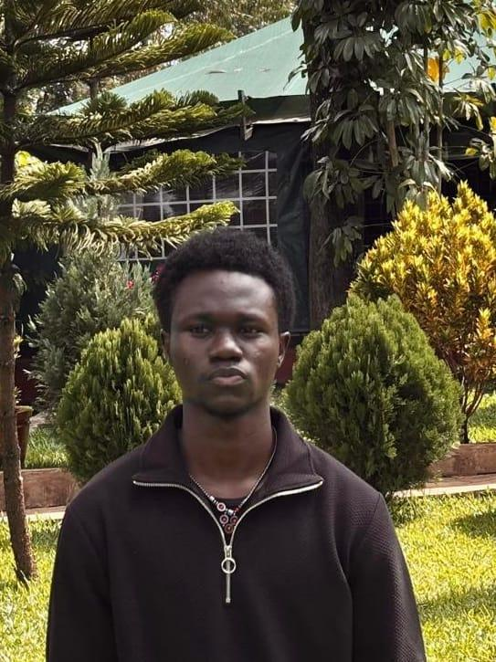

Morgan Ahidi
Kenya Chapter Social Media Manager
Student in Uzima University, Morgan Ahidi actively contributes to public health initiatives, including blood drives and mental health advocacy. His approach to medicine combines academic growth with meaningful service, making an impact both in class and in the community.
Believing that medicine must extend beyond treatment, Morgan holds charity and compassion as essential values in healthcare. He continues to balance learning with leadership, striving to grow into a doctor who serves with purpose.